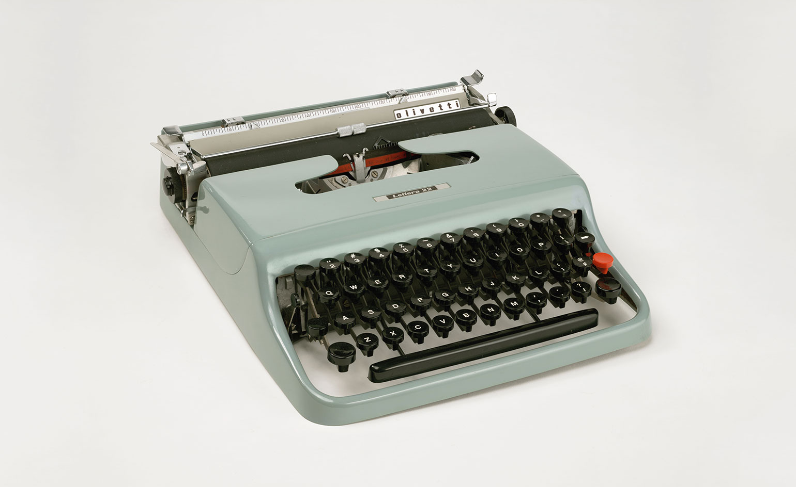
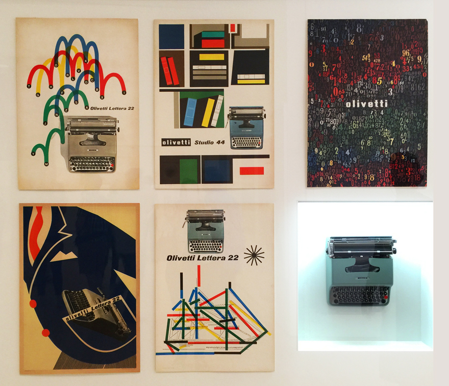
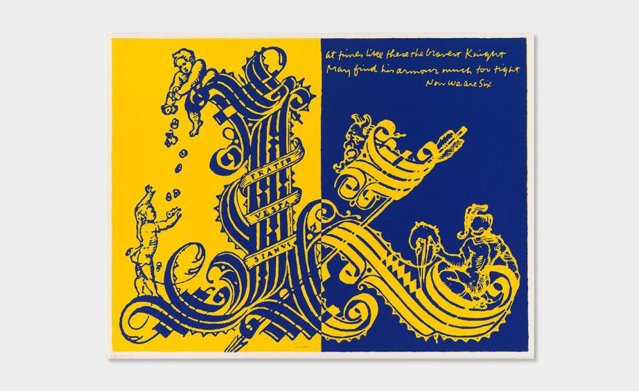
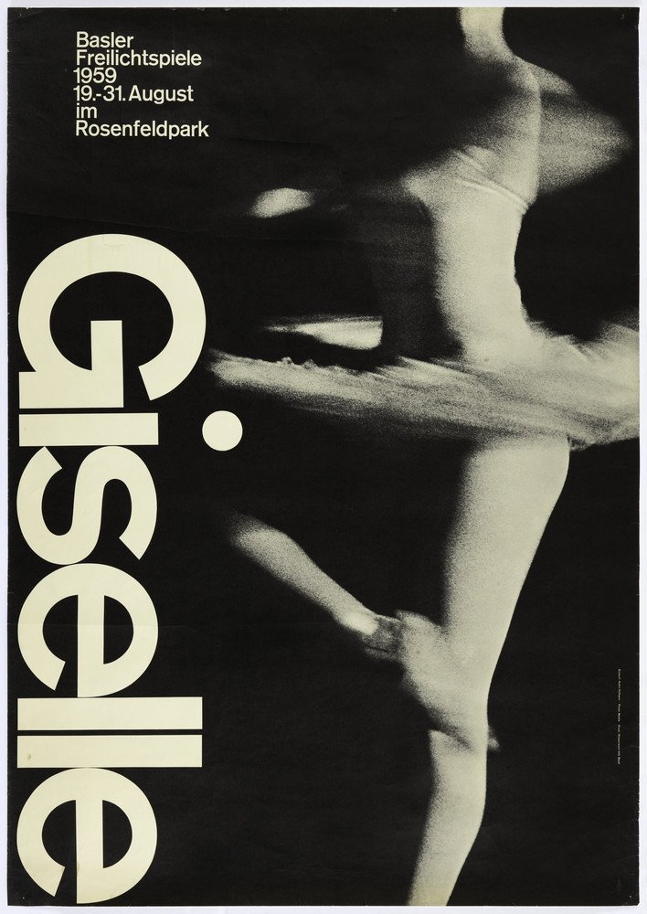
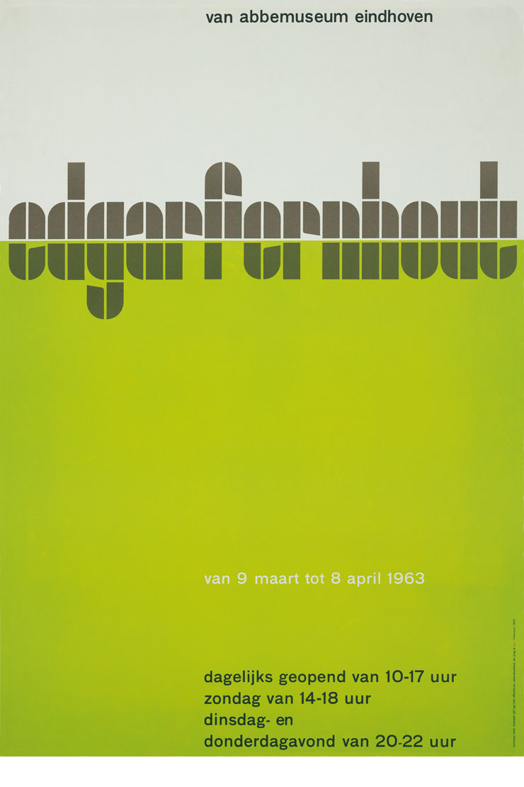
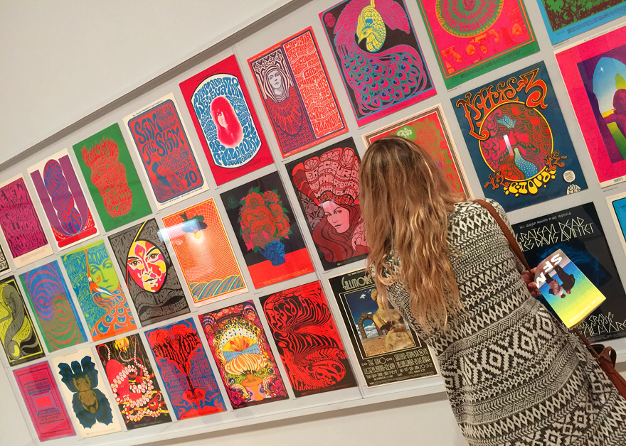
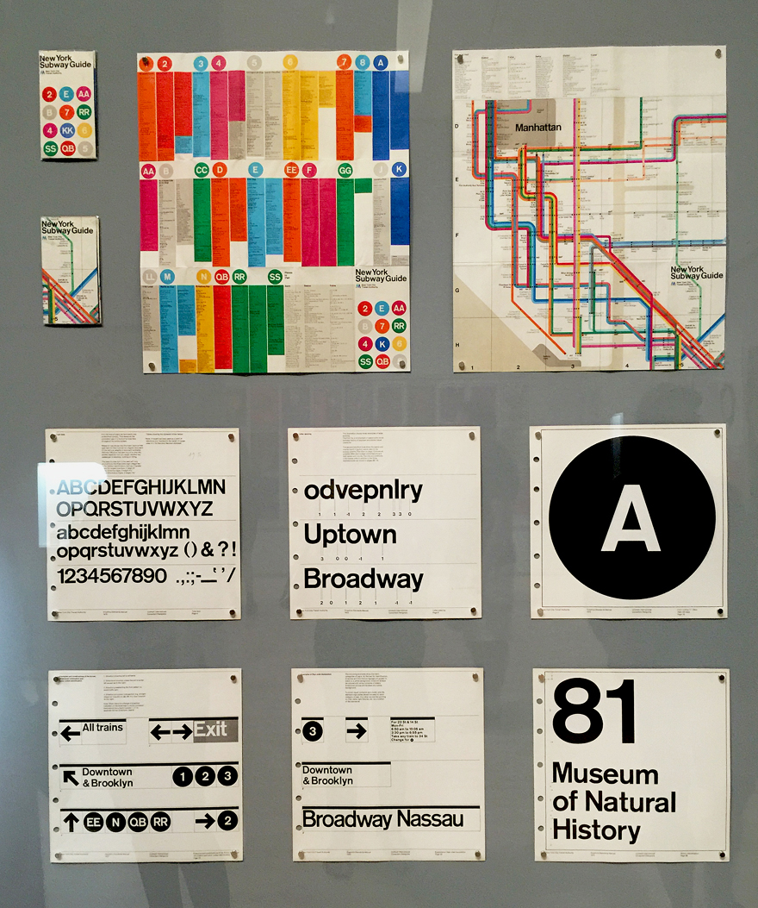
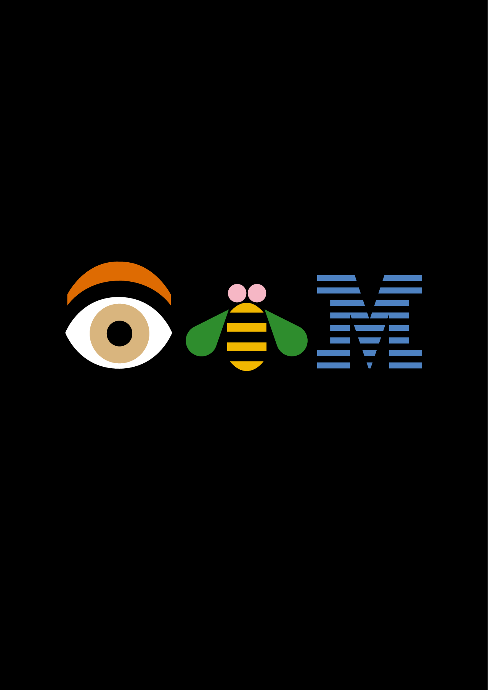
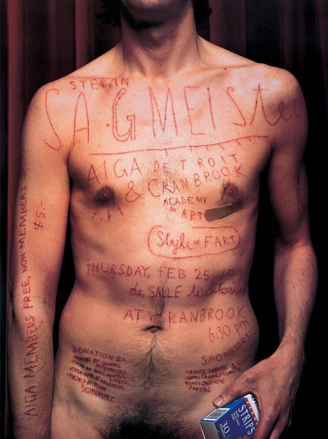

The Olivetti Lettera 22 typewriter, designed by Marcello Nizzoli in 1950

Corita Kent, International Signal Code Alphabet, 1968

Armin Hofmann, Giselle ballet, Basler Freilichtspiele poster, 1959

Wim Crouwel, Edgar Fernhout exhibition, Van Abbemuseum, Eindhoven poster, 1963

Concert Posters, 1966–70 Wes Wilson, Victor Moscoso, Rick Griffin, Bonnie MacLean, Victor Moscoso, Jack Hatfield, William Henry, Patrick Lofthouse, Wilfred Weisser, Lee Conklin and David Singer.

New York Subway Guides and New York City Transit Authority Graphic Standards Manual, 1972, 1970 Massimo Vignelli and Bob Noorda, Vignelli Associates and Unimark International

Eye Bee M poster designed by Rand in 1981 for IBM.

April Greiman Poster for Design Quarterly, 1986

Stefan Sagmeister Poster for AIGA Detroit lecture, Cranbrook, Michigan, 1999

Jennifer Morla Posters designed for the Center for the Study of the Novel, Stanford University, 2005